영국 브랜드 95
영국에서 시작한 브랜드 95개를 로고와 함께 모았습니다. 수록 기준은 검수된 브랜드 설명이나 공식 웹사이트가 일치하는 위키데이터 개체에서 기원 국가가 확인된 경우로 한정했습니다.
다른 국가 보기
국가별 전체 →산업별로는 미디어·엔터테인먼트 26개, 모빌리티 11개, 브랜드·비즈니스 10개, 금융 9개 순입니다. 설립연도가 확인된 브랜드는 74개이며 가장 오래된 곳은 1824년, 가장 최근은 2019년에 시작했습니다. 시기별로는 1900년 이전 11개, 1900~1949년 11개, 1950~1999년 42개, 2000년 이후 10개입니다. 수록 자료로는 로고 이미지 91개, 로고 변천 자료 10개, 연혁 타임라인 19개를 갖췄습니다. 이 가운데 65개는 공식 웹사이트가 일치하는 위키데이터 개체로 연결해 두었습니다.
영국 브랜드 목록
러쉬(LUSH)는 신선한 천연 원료로 만든 핸드메이드 화장품을 판매하는 영국 코스메틱 브랜드이다.
리복(Reebok)은 영국 볼턴에서 시작된 운동화·스포츠 의류 브랜드이다.
 버버리BURBERRY영국 · 1856년
버버리BURBERRY영국 · 1856년버버리(Burberry)는 1856년 설립된 영국의 럭셔리 패션 하우스이다.
비비안 웨스트우드Vivienne Westwood영국비비안 웨스트우드(Vivienne Westwood)는 펑크를 주류 패션으로 끌어올린 영국의 독립 럭셔리 패션 브랜드이다.
로열 더치 쉘Shell영국 · 1890년셸은 영국·네덜란드에 뿌리를 둔 글로벌 에너지·석유 기업으로, 원유 탐사와 생산부터 정유, 가스, 화학, 주유소 소매 판매까지 에너지 가치사슬…
퍼스트 초이스First Choice영국퍼스트 초이스(First Choice)는 영국의 패키지 휴가 브랜드로, TUI 그룹에 속해 있다.
아이슬란드Iceland영국 · 1970년아이슬란드(Iceland)는 냉동식품을 전문으로 하는 영국의 슈퍼마켓 체인이다.
로이즈Lloyds영국로이즈(Lloyds)는 검은 말 심볼로 잘 알려진 영국의 대형 소매은행으로, 로이즈 뱅킹 그룹(Lloyds Banking Group)에 속한다.
와이즈Wise영국 · 2011년와이즈(Wise)는 2011년 에스토니아 출신 크리스토 캐르만과 타베트 힌리쿠스가 영국 런던에서 창업한 핀테크로, 출범 당시 사명은…
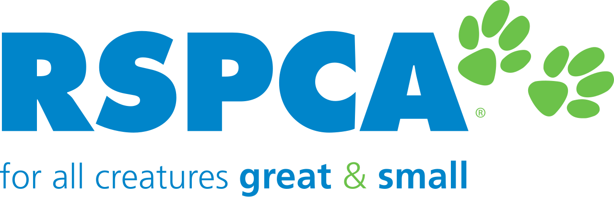
왕립동물학대방지협회RSPCA영국 · 1824년왕립동물학대방지협회(RSPCA)는 1824년 영국 런던에서 설립된 세계 최초이자 가장 오래된 전국 단위 동물복지 자선단체다.
 옴렛Omlet영국 · 2004년
옴렛Omlet영국 · 2004년옴렛(Omlet)은 2004년 영국에서 설립된 반려동물·도시 양계 디자인 제품 회사로, 모던 플라스틱 닭장 '에글루(Eglu)'로 가장 잘…
 페이세이프Paysafe영국
페이세이프Paysafe영국페이세이프(Paysafe)는 영국에 본사를 둔 다국적 온라인 결제·디지털 지갑 기업이다.
 리베나Ribena영국
리베나Ribena영국리베나는 블랙커런트(Ribes nigrum)를 원료로 한 영국의 대표적 과일 농축 음료 브랜드다.
 슬래진저Slazenger영국 · 1881년
슬래진저Slazenger영국 · 1881년슬래진저(Slazenger)는 1881년 영국 런던에서 설립된 스포츠용품 브랜드로, 현존하는 세계에서 가장 오래된 스포츠 브랜드 중 하나로…
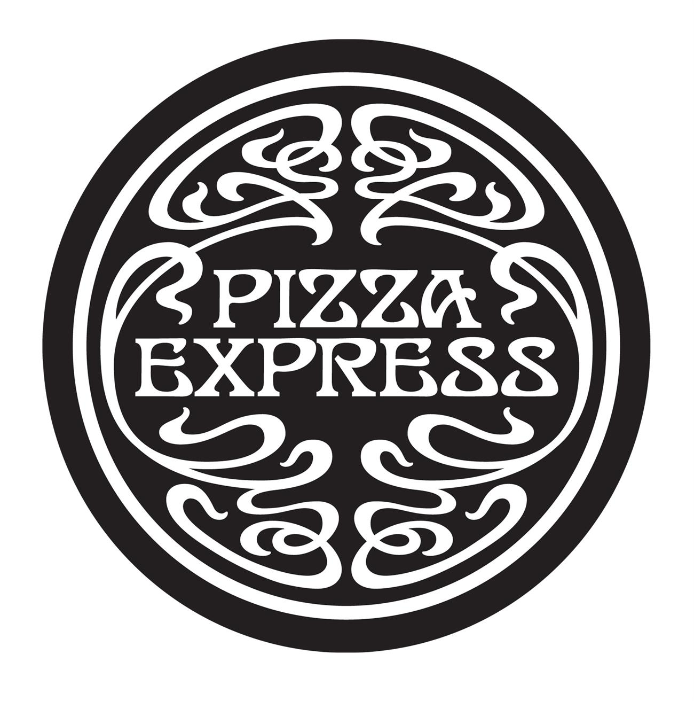
피자익스프레스Pizza Express영국 · 1965년피자익스프레스는 1965년 영국 런던 소호에서 시작된 캐주얼 다이닝 피자 레스토랑 체인이다.
 포트메리온Portmeirion영국 · 1960년
포트메리온Portmeirion영국 · 1960년포트메리온(Portmeirion)은 1960년 영국에서 설립된 도자기·식기 브랜드이다.
마더케어Mothercare영국 · 1961년마더케어(Mothercare)는 임산부와 영유아·아동용품을 전문으로 하는 영국의 유아용품 소매 브랜드이다.
MPL 커뮤니케이션스영국 · 1970년MPL 커뮤니케이션스(MPL Communications)는 폴 매카트니의 사업을 총괄하는 음악 출판·엔터테인먼트 지주회사이다.
피트니스 퍼스트Fitness First영국피트니스 퍼스트(Fitness First)는 영국에서 시작된 헬스클럽·피트니스 짐 체인 브랜드이다.
멀버리Mulberry영국 · 1971년멀버리(Mulberry)는 명품 가죽 핸드백으로 대표되는 영국의 가죽 잡화 브랜드이다.
 맥라렌McLaren영국 · 1963년
맥라렌McLaren영국 · 1963년맥라렌(McLaren)은 영국 서리주 워킹에 본사를 둔 모터레이싱 팀으로, 1963년 브루스 맥라렌이 설립했으며 현재 포뮬러 원에 참가하고…
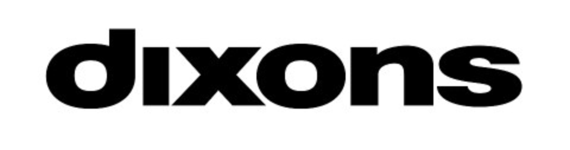
딕슨스Dixons영국 · 1937년딕슨스(Dixons)는 1937년 영국에서 출발한 가전 소매 브랜드로 현재는 Currys로 통합돼 매장 브랜드로는 폐지되었다.
리버 아일랜드River Island영국 · 1948년리버 아일랜드(River Island)는 1948년 설립된 런던 기반의 영국 하이스트리트 패스트패션 브랜드이다.
 영국항공British Airways영국 · 1974년
영국항공British Airways영국 · 1974년영국항공(British Airways)은 1974년에 영국유럽항공과 영국해외항공이 재합병하여 설립된 영국의 항공사이다.
 슈웹스Schweppes영국
슈웹스Schweppes영국슈웹스(Schweppes)는 1783년 독일 출신 발명가 Johann Jacob Schweppe가 스위스 제네바에서 만든 영국의 탄산음료…
 펜타그램Pentagram영국 · 1972년
펜타그램Pentagram영국 · 1972년펜타그램(Pentagram)은 그래픽 디자인, 브랜드 아이덴티티, 건축, 인테리어, 제품 디자인 등 다양한 분야를 다루는 영국 런던 노팅힐…
로이터Reuters영국 · 1851년로이터(Reuters)는 독일인 파울 율리우스 로이터가 설립한 영국의 뉴스·정보 제공 기업이다.
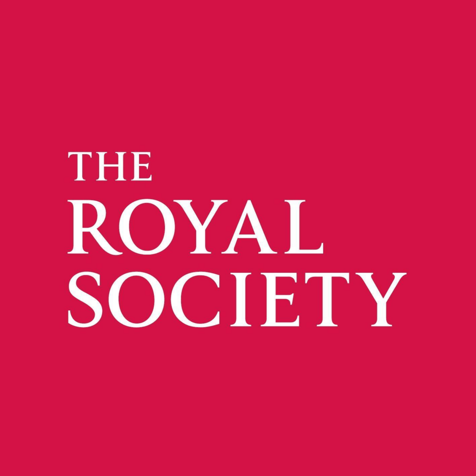
왕립학회Royal Society영국왕립학회(Royal Society)는 공식 명칭이 '자연과학 진흥을 위한 런던 왕립학회'인 영국의 국립 과학 아카데미이자 학회이다.
버진 애틀랜틱Virgin Atlantic영국 · 1984년버진 애틀랜틱(Virgin Atlantic)은 영국 웨스트서식스주 크롤리에 본사를 둔 영국의 항공사이다.
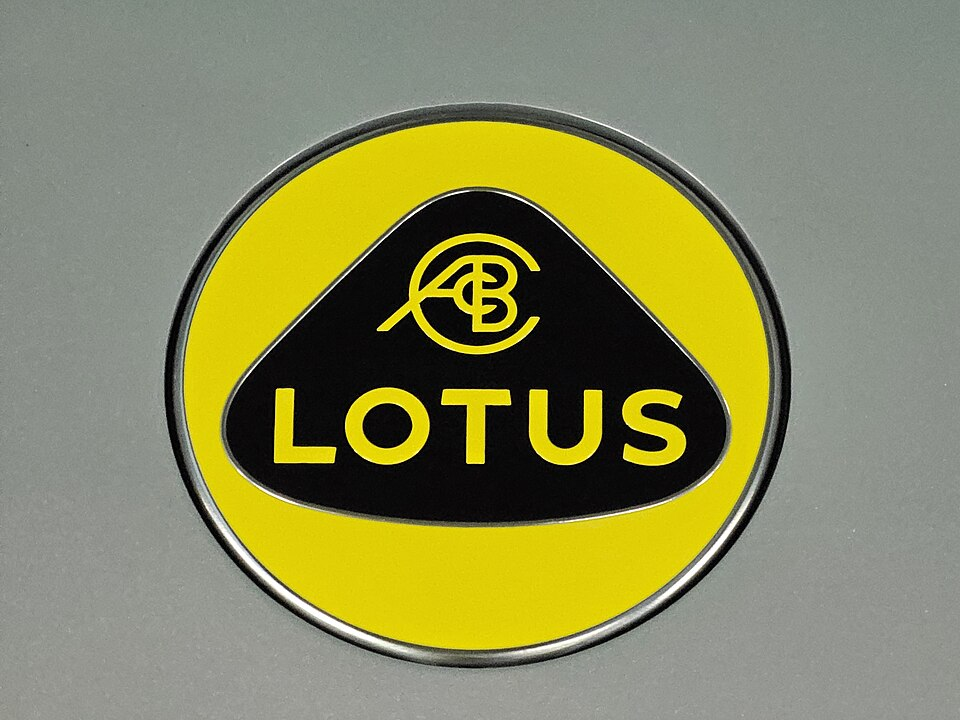
로터스 자동차Lotus Cars영국 · 1952년로터스 자동차(Lotus Cars)는 영국에 기반을 둔 스포츠카 제조업체이다.
리얼 월드 레코드Real World Records영국 · 1989년리얼 월드 레코드(Real World Records)는 피터 가브리엘이 설립한 영국의 월드뮤직 전문 음반사이다.
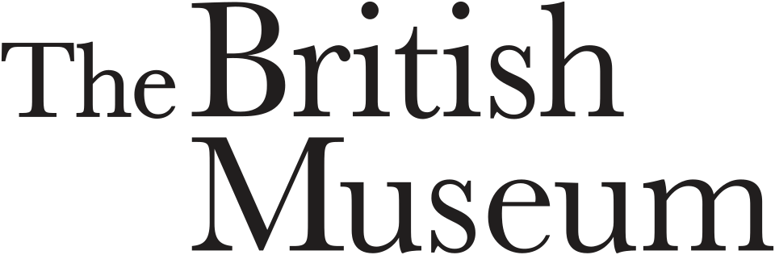
대영박물관British Museum영국대영박물관(British Museum)은 영국의 런던 블룸즈베리에 있는 영국 최대의 국립 공공박물관이다.
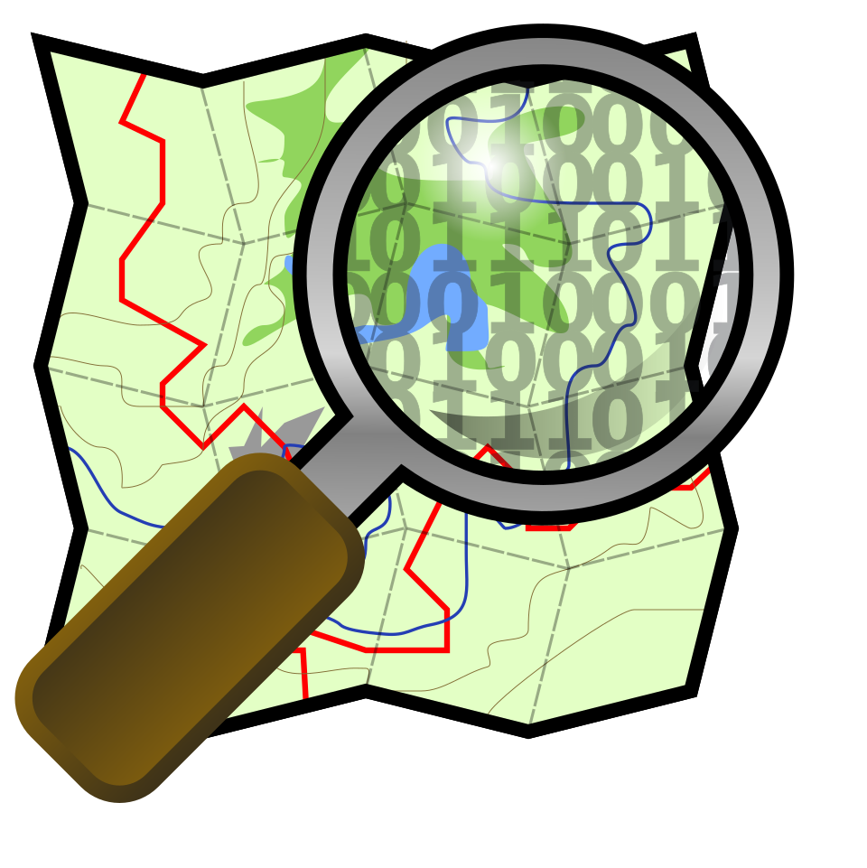
오픈스트리트맵OpenStreetMap영국 · 2004년오픈스트리트맵(OpenStreetMap)은 누구나 참여할 수 있는 오픈 소스 방식의 무료 지도 서비스이다.
ARM 홀딩스Arm Holdings영국 · 1990년ARM 홀딩스(Arm Holdings)는 프로세서와 관련 시스템을 설계하고 지식재산을 라이선스하는 영국 반도체 회사이다.
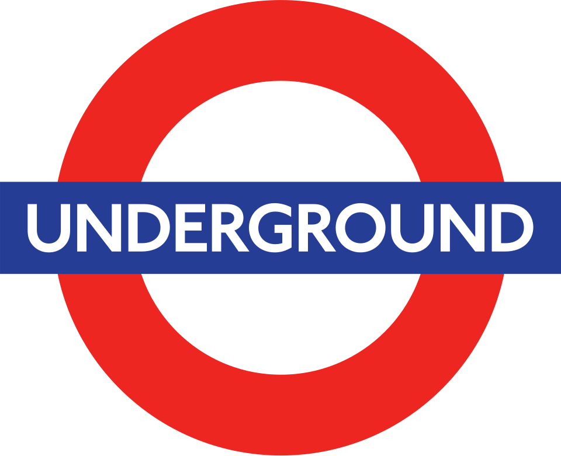
런던 지하철London Underground영국 · 1890년런던 지하철(London Underground)은 영국 그레이터 런던과 에식스주, 하트퍼드셔주, 버킹엄셔주 등 주변 지역에서 운영되는…
Aon(회사)Aon plc영국 · 1982년Aon(회사)(Aon plc)는 위험 관리와 보험 중개, 인적자본 관련 자문을 제공하는 영국의 국제 전문 서비스 회사이다.
잉글랜드 은행Bank of England영국잉글랜드 은행(Bank of England)은 1694년 설립된 영국의 중앙은행이다.
롤스로이스 자동차Rolls-Royce Motor Cars영국 · 1998년롤스로이스 자동차(Rolls-Royce Motor Cars)는 영국 치체스터에 본사를 둔 자동차 수공 제조 기업으로, 독일 BMW를 모기업으로…
 아틀라시안 윌리엄스 포뮬러 원 팀Williams Racing영국 · 1977년
아틀라시안 윌리엄스 포뮬러 원 팀Williams Racing영국 · 1977년아틀라시안 윌리엄스 포뮬러 원 팀(Williams Racing)은 영국 그로브에 본사를 둔 포뮬러 원 모터레이싱 팀이자 컨스트럭터이다.
내셔널 갤러리National Gallery영국 · 1824년내셔널 갤러리(National Gallery)는 영국 런던 중심부에 위치한 미술관이다.
 스태빌리티 AIStability AI영국 · 2019년
스태빌리티 AIStability AI영국 · 2019년스태빌리티 AI(Stability AI)는 영국 런던에 본사를 둔 인공지능 기업으로, 텍스트-이미지 생성 모델 스테이블 디퓨전으로 가장 잘…
유니레버Unilever영국 · 1929년유니레버(Unilever)는 영국 런던에 본사를 둔 다국적 기업이다.
이지젯easyJet영국 · 1995년이지젯(easyJet)은 영국의 저비용 항공사로, 인터넷·전화 예약과 유료 기내식·음료를 바탕으로 서비스를 효율화해 저렴한 운임을 제공하는…
 트와이닝스Twinings영국
트와이닝스Twinings영국트와이닝스(Twinings)는 영국 햄프셔주 앤도버에 본사를 둔 차 판매 브랜드로, 커피와 핫초콜릿, 몰트음료 등도 함께 취급한다.
 구글 딥마인드Google DeepMind영국 · 2010년
구글 딥마인드Google DeepMind영국 · 2010년구글 딥마인드(Google DeepMind)는 알파벳의 자회사이자 영국의 인공지능(AI) 프로그램 개발 회사이다.
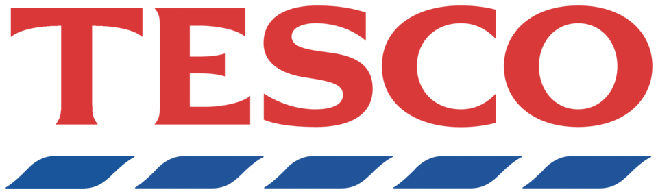
테스코Tesco영국 · 1919년테스코(Tesco)는 영국에 본사를 둔 대형 소매유통 브랜드이다.
캐노니컬Canonical Ltd.영국 · 2004년캐노니컬(Canonical Ltd.)은 영국의 컴퓨터 소프트웨어 회사이다.
마담 투소Madame Tussauds영국 · 1839년마담 투소(Madame Tussauds)는 밀랍 조각가 마리 투소에 의해 설립된 밀랍 인형 박물관이다.
전체 목록
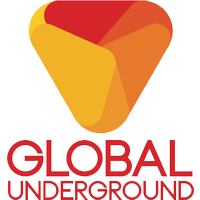
글로벌 언더그라운드 Global Underground글로벌 언더그라운드(Global Underground)는 1996년 앤디 호스필드와 제임스 토드가 영국 뉴캐슬에서 설립한 댄스 음악 레이블이다.데카 레코드 Decca Records데카 레코드(Decca Records)는 1929년 영국 런던에서 설립돼 현재 유니버설 뮤직 그룹 산하에 있는 영국계 음반사이다.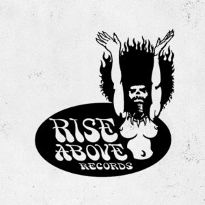
라이즈 어보브 레코드 Rise Above Records라이즈 어보브 레코드(Rise Above Records)는 1988년 리 도리안이 영국에서 설립한 둠·스토너 메탈 레이블이다.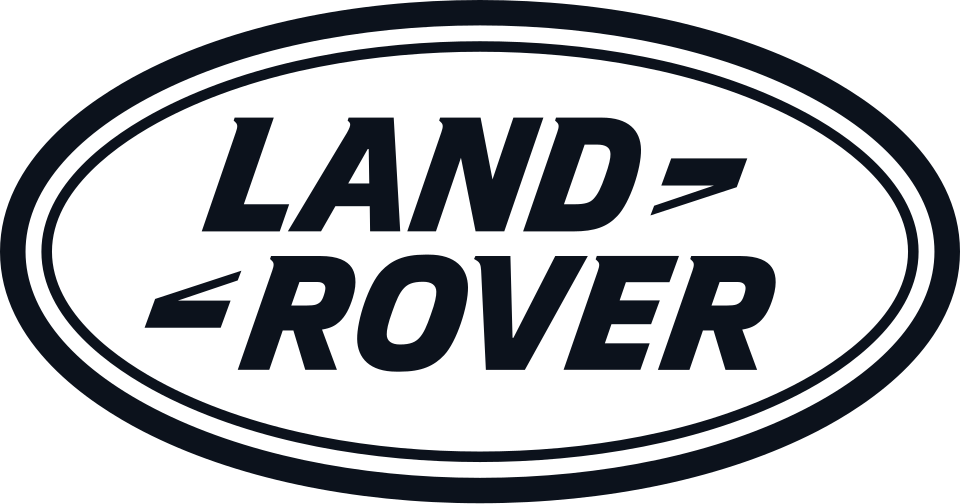
랜드로버 Land Rover랜드로버(Land Rover)는 영국 코번트리에 본사를 둔 자동차 브랜드로, 레인지로버와 디스커버리 등을 중심으로 프리미엄 SUV를 제작한다.로튼 하우스 Rowton Houses로튼 하우스(Rowton Houses)는 1892년 영국 런던에서 시작한 독신 노동자용 숙박시설이다.미니스트리 오브 사운드 Ministry of Sound미니스트리 오브 사운드(Ministry of Sound)는 1991년 영국 런던에서 시작한 댄스 음악 브랜드다.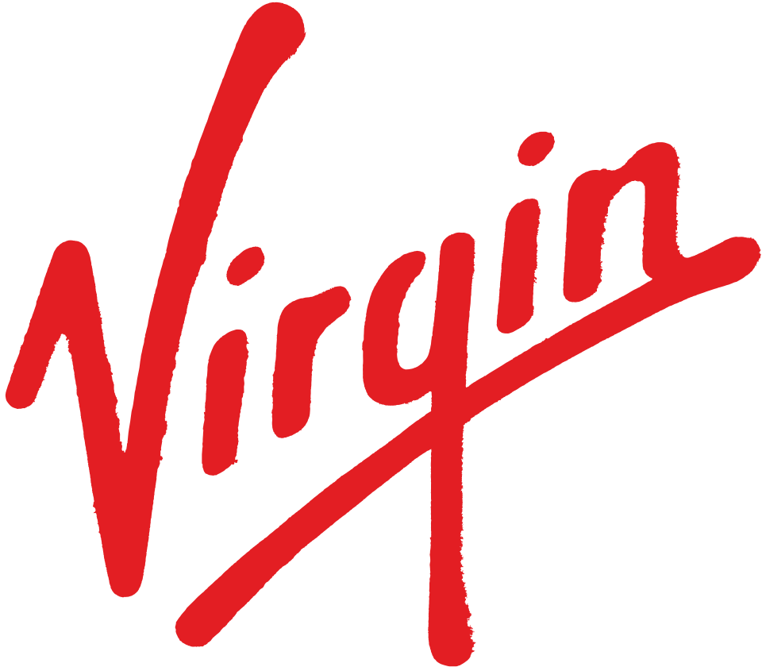
버진 레코드 Virgin Records버진 레코드(Virgin Records)는 1972년 리처드 브랜슨 등이 영국에서 설립해 현재 유니버설 뮤직 그룹 산하에 있는 음반사이다.벤틀리 Bentley벤틀리(Bentley)는 영국 크루에 본사를 둔 수공 고급 승용차 브랜드이다.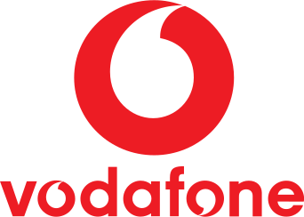
보다폰 Vodafone보다폰(Vodafone)은 영국 런던에 본사를 둔 이동 통신 사업자이다.보비스 Bovis보비스(Bovis)는 영국의 건설 기업이다.블러드 앤 파이어 Blood and Fire블러드 앤 파이어(Blood and Fire)는 1993년 영국 맨체스터에서 설립된 레게·덥 재발매 레이블이다.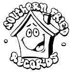
서던 프라이드 레코드 Southern Fried Records서던 프라이드 레코드(Southern Fried Records)는 1994년 노먼 쿡(팻보이 슬림)이 영국에서 설립한 댄스 음악 레이블이다.스캄 레코드 Skam Records스캄 레코드(Skam Records)는 1990년경 앤디 매독스가 영국 맨체스터에서 설립한 일렉트로닉 레이블이다.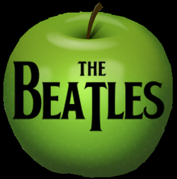
애플 레코드 Apple Records애플 레코드(Apple Records)는 1968년 비틀즈가 설립한 영국의 음반 레이블이다.에이스 레코드 Ace Records에이스 레코드(Ace Records)는 1975년 설립된, 과거 음반의 복원·재발매를 전문으로 하는 영국의 리이슈 레이블이다.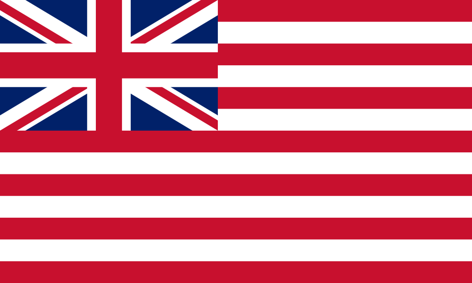
영국 동인도 회사 East India Company영국 동인도 회사(East India Company)는 인도양 및 동아시아 지역에서 모직물 시장 및 향료 획득 등의 독점 무역을 목표로 설립된 영국의 칙허…워프 레코즈 Warp Records워프 레코드(Warp Records)는 1989년 스티브 베킷 등이 영국 셰필드에서 설립한 일렉트로닉·실험음악 레이블이다.웨지우드 Wedgwood웨지우드(Wedgwood)는 영국의 대표적인 도자기 브랜드로, 1759년 조사이아 웨지우드가 설립했다.유럽 부흥 개발 은행 European Bank for Reconstruction and Development유럽 부흥 개발 은행(European Bank for Reconstruction and Development)은 동구권과 소련의 붕괴 이후 민간 경제 부문을…유로스타 Eurostar유로스타(Eurostar)는 영국 런던의 세인트 팬크러스역, 프랑스 파리의 북역, 벨기에 브뤼셀의 남역을 최고 속도 300km/h로 잇는 국제 고속철도이다.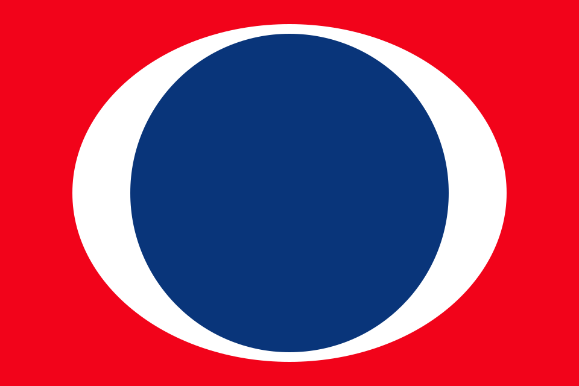
카니발 코퍼레이션 Carnival Corporation카니발 코퍼레이션(Carnival Corporation)은 여러 크루즈 브랜드와 여객선을 운영하는 크루즈 여객선 운항 회사로, 뉴욕 증권거래소 상장사이자 S&P…캐슬 커뮤니케이션스 Castle Communications캐슬 커뮤니케이션스(Castle Communications)는 1983년 영국에서 설립된 음반 재발매 전문 기업이다.트로잔 레코드 Trojan Records트로잔 레코드(Trojan Records)는 1968년 영국 런던에서 설립된 레게·스카 음반 레이블이다.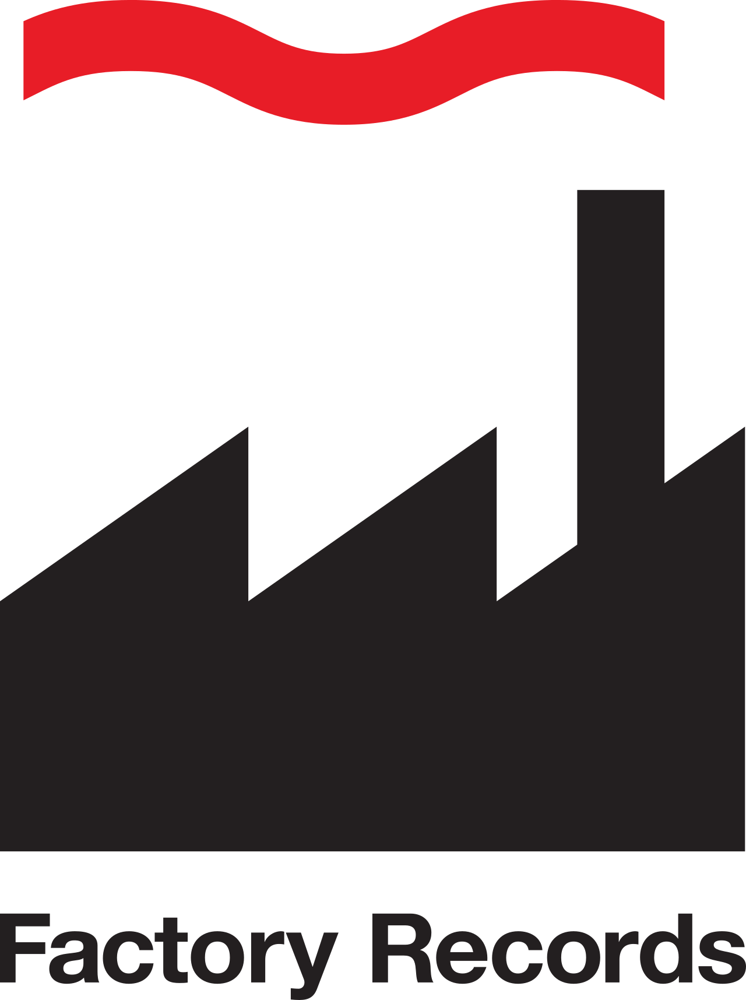
팩토리 레코드 Factory Records팩토리 레코드(Factory Records)는 1978년 토니 윌슨과 앨런 이래즈머스가 영국 맨체스터에서 설립한 음반 레이블이다.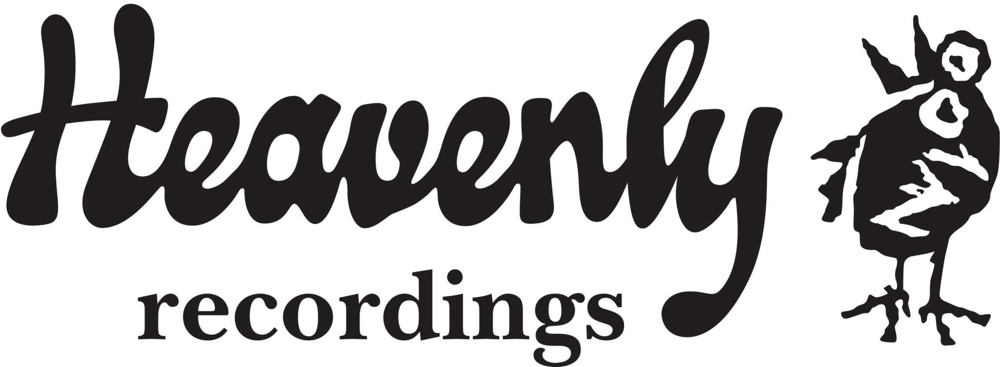
헤븐리 레코딩스 Heavenly Recordings헤븐리 레코딩스(Heavenly Recordings)는 1990년 제프 배럿이 영국 런던에서 설립한 인디 음반 레이블이다.AptivAptiv는 자동차 기술과 부품을 공급하며, 여러 국가의 제조 시설과 기술 센터를 기반으로 완성차 모델에 제품을 제공하는 기업이다.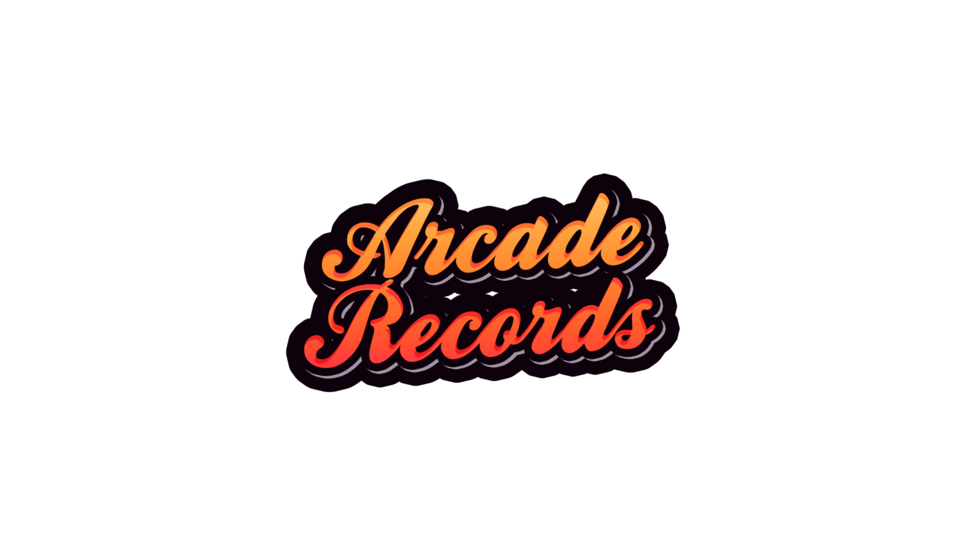
Arcade RecordsArcade Records는 영국의 미디어·엔터테인먼트 브랜드로, 콘텐츠 포맷, 팬덤, 채널 운영, 지식재산권 확장이 함께 작동하는 영역입니다.Arch Capital GroupArch Capital Group은 특수보험을 중심으로 보험·재보험·모기지보험을 세계 각지에서 인수하는 버뮤다 면제 공개회사이다.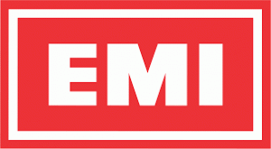
EMIEMI는 1931년 영국에서 설립된 '빅4' 메이저 음반사이다.HSBCHSBC(HSBC)는 영국 런던에 본사를 둔 금융 그룹이며 홍콩·상하이 은행의 영문 명칭에서 머릿글자를 딴 이름이다.IMDbIMDb(IMDb)는 영화, 텔레비전 시리즈, 팟캐스트, 비디오 게임과 온라인 스트리밍 콘텐츠 정보를 제공하는 온라인 데이터베이스이다.last.fmLast.fm(last.fm)은 영국에 기반을 둔 인터넷 라디오 방송 및 음악 추천 웹사이트이다.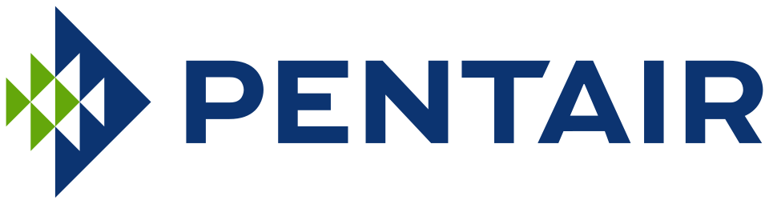
PentairPentair는 아일랜드에 법인을 두고 영국에 세무상 거주지를 둔 수처리 회사로, 주거·상업·산업·공공 분야에 관련 설비와 사업을 제공한다.WHSmithWHSmith는 1792년 런던에서 창업한 영국의 서적·문구·신문 소매 기업으로, 1848년 철도역 매점을 열며 트래블 리테일의 원형을 만들었다.ZTT RecordsZTT 레코드(ZTT Records)는 1983년 트레버 혼·질 싱클레어·폴 몰리가 영국 런던에서 설립한 음반 레이블이다.